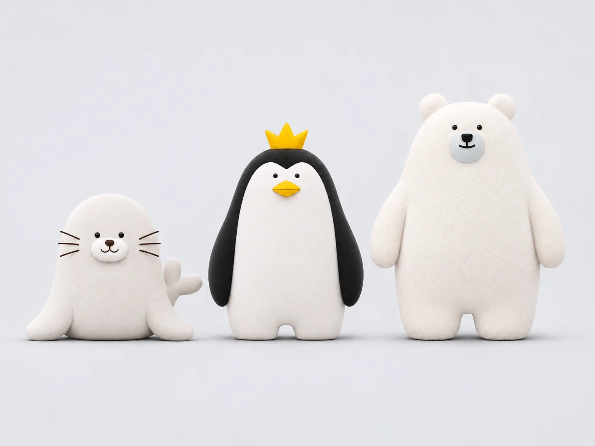

OUR LITTLE FRIENDS
눈곰이와
친구들.
세 친구의 원본부터 표정과 움직임까지.
소중한 캐릭터 자료를 한곳에서 만나보세요.

어떤 모습이 궁금하세요?
원본과 비율, 얼굴, 움직임을 자세히 살펴보세요.
눈곰이
포근한 마음으로 이야기를 들어주는 북극곰
타고나
작은 왕관처럼 반짝이는 호기심 많은 펭귄
해오
세상을 느긋하게 둘러보는 다정한 하프물범
눈곰이의
비밀 잡화점
손님의 사연에 꼭 맞는 것을 찾아주는 작은 다정한 잡화점
어디선가 문득 나타나는 작은 잡화점이 있어요. 길을 걷다 낯선 곳을 헤매거나, 마음속에 풀리지 않는 질문을 품고 있을 때면 따뜻한 불빛이 새어 나오는 가게가 보입니다. 문을 열면 눈곰이와 타고나, 해오가 반갑게 손님을 맞이합니다.
이곳을 찾는 손님들은 저마다 다른 사연을 가지고 있어요. 여행을 앞두고 무엇을 챙겨야 할지 고민하는 사람도, 소중한 이에게 어떤 선물을 해야 할지 망설이는 사람도 있어요. 세 친구는 손님의 이야기를 찬찬히 듣고, 꼭 맞는 물건을 함께 찾아 나서요.
잡화점은 손님을 만나는 아지트이자 취향을 찾는 여정을 시작하는 문이 됩니다. 손님이 고민이나 바람(소원)을 들고 오면, 세 친구(눈곰이, 타고나, 해오)는 그 사연이 펼쳐지는 곳으로 함께 떠나요. 여행을 앞둔 손님의 이야기라면 낯선 도시로, 마음을 전하고 싶은 손님의 이야기라면 편지와 추억이 기다리는 곳으로 떠나기도 하죠. 세 친구는 손님의 사연이 펼쳐지는 공간을 함께 거닐며, 그 사람의 취향과 마음에 꼭 맞는 것을 찾아서 추천해줘요.
잡화점은 손님과 세 친구가 만나는 아지트이자, 취향을 찾아가는 여정의 시작입니다. 어떤 사연을 가진 손님이 찾아올지, 그 마음에 꼭 맞는 것은 무엇일지 알 수 없기에 눈곰이네 잡화점에서는 매일 새로운 이야기가 펼쳐져요.
마음에 작은 고민이 생긴 날, 어디선가 따뜻한 불빛을 밝히며 나타나는 잡화점이 있습니다.
여행에 무엇을 챙겨야 할지 막막할 때도, 소중한 사람에게 어떤 선물을 건네야 할지 고민될 때도 괜찮아요. 눈곰이와 타고나, 해오가 손님의 이야기에 귀 기울이고 그 마음에 꼭 맞는 것을 함께 찾아드릴게요.
잡화점의 사계절
눈곰이와 친구들이 살아가는 계절별 풍경과 일상